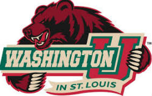
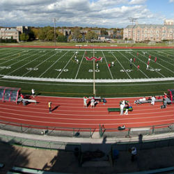
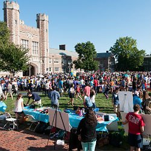

Things To Do Outside of Class
 There are a wide variety of things that students can get involved in and around campus. The three largest categories are varisity sports, club and intramural sports, and clubs and groups. If you find that you need to do more at Wash U than just classes it is highly recommended that you look into joining one of these groups. Joining these groups will also help students acclimate by giving them a new group of people that they will be able to see on a regular basis in a non school envirionment
Varsity Sports
Varsity Atheletes will be able to have the experience of travleing around the country to compete while at the school, as well as practicing in some the schools top notch facilities. Being part of a varsity team is very meaningful because student will often attend practices almost every day and be able to spend a lot of time with other students in a non school environment. This will help new students acclimate faster. To join a varsity sport students should reach out to the coach of the sport which they can find on the Wash U sports site.
Possible varsity sports include:
Click the link below to get to the website
Club and IM Sports
Club sports are great for students who want to play competitively but do not want to invest as much time into the sport. With Less frequent practices and less traveling club sports can be a great subsitute for varisity sports. Another way to stay active is to join an intramural sport. These sports have the least time commitment as they often do not ask for any practice and will not travel. They are great way for a group of students to get together a play a sport of their choice about once a week.
Possible intramural and club sports include
For more information on club and intramural sports please click the link below.
Clubs and Groups
There are a huge amount of clubs and student groups to choose from if you are looking to join. The clubs and groups range from various Acapella groups to Model U.N. to the Social Programming Board and much much more. Joining a group is easy and will help you branch out and meet new people and experience new things. The easiest way to join a club is to sign up for one during the club fair. However if you missed your chance at the club fair you can still go on the Wash U club directory and search the club and sign up that way.
Bellow is a list of a few clubs to give you an idea of some of the things offered at Wash U
If you did not see the club you were looking for listed above, do not worry, the full unabridged list is in the link below